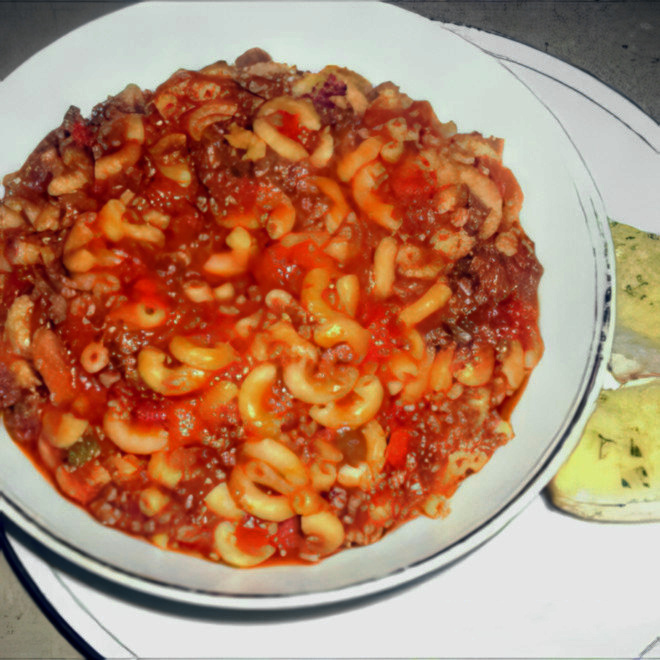

Goulash Recipe
Home

Description
This tasty and low effort goulash recipe is an absolute delight. I use a slow cooking method to reduce
the time spent in the kitchen while still getting an amazingly flavorful result. This recipe uses some
of my favorite veggies but you should feel free to swap or add whatever veggies appeal to you.
Ingredients
- Pasta (macaroni, shells or elbows)
- Red Sauce
- Ground Beef
- Bell Peppers
- Mushrooms
- Broccoli
- Mozzerella
- Salt
- Pepper
- Garlic Powder
- Crushed Red Pepper
Steps
- Boil the pasta to your desired doneness and set aside
- Pan fry the ground beef while seasining to taste with salt, pepper, garlic powder and crushed red pepper
- Combine the remaining ingredients in a large pot over medium low heat until sauce is bubbling
- Allow to simmer over low heat for at least 1 hour, stirring occasionally